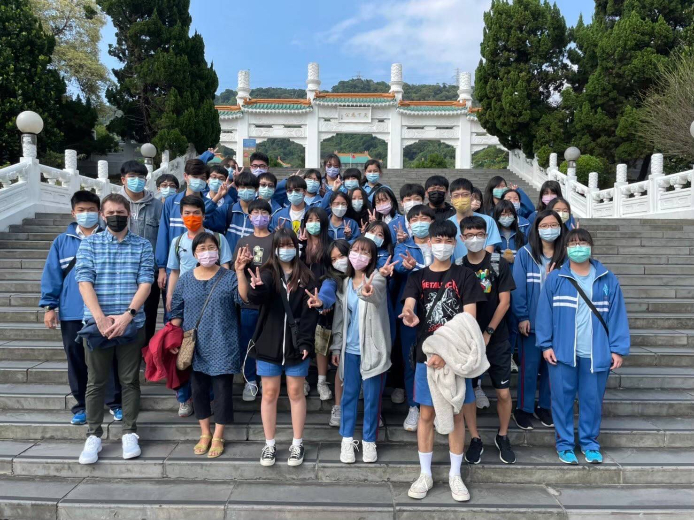
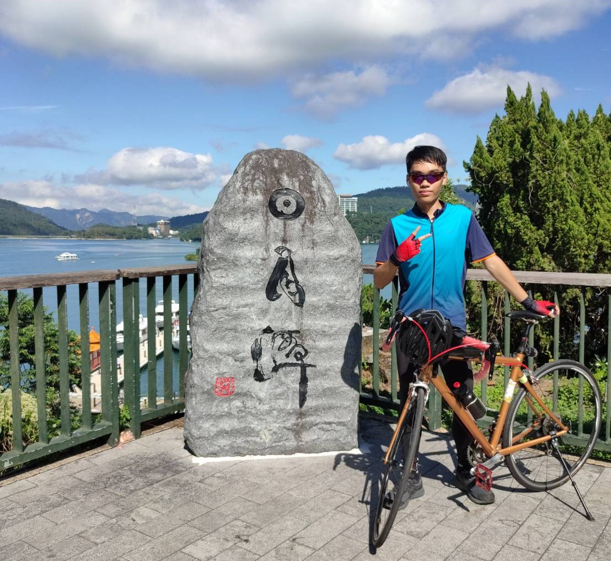

| JerryChen | Home About Me My work |
姓名：陳章銓、JerryChen
生日：2005/01/25
出生：新北市
我是一位夢想前往IT產業的資管系學生，平常喜歡運動騎著自行車到處跑對於很多運動都感興趣，遊戲也有著大大的熱衷，偶爾會玩一下Unity做做小遊戲，有著一顆小時候的遊戲夢。
|  | 中和高中 滿滿的讀書還有還有日復一日的生活 |
| 暨南大學 在這裡真的很開心快樂結交了不少朋友 |
|
自行車  |
空拍 |
爬山 |
| 從小耳濡目染騎著車到處跑很舒服 | 我國中畢業的禮物讓我有一個空拍夢! | 以前很常跟家人到處走可惜腰傷後就沒辦法了 |